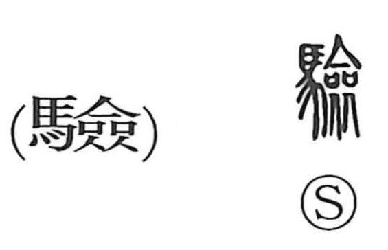

減

Kun: heru, herasu | On: gen
to decrease ・ to reduce ・ to diminish ・ to cut down ・ to lessen
Explanation
減 combines 水, water, with the sound element 咸. In 咸, 戉, a sacred broad-axe, is placed over a vessel containing a prayer. The implement seals and protects the prayer’s power.
Adding water probably represents an act intended to weaken that power. Water introduced into the sacred vessel could defile its contents and lessen the effect of the prayer. Related ritual images include 沓, water poured over the prayer vessel, and 盜, interference with the blood of a sworn covenant.
From diminishing sacred efficacy, 減 broadens to reducing anything in strength, quantity, or extent. It means to lessen, decrease, subtract, or omit a part. The essential action is making something less than it was.